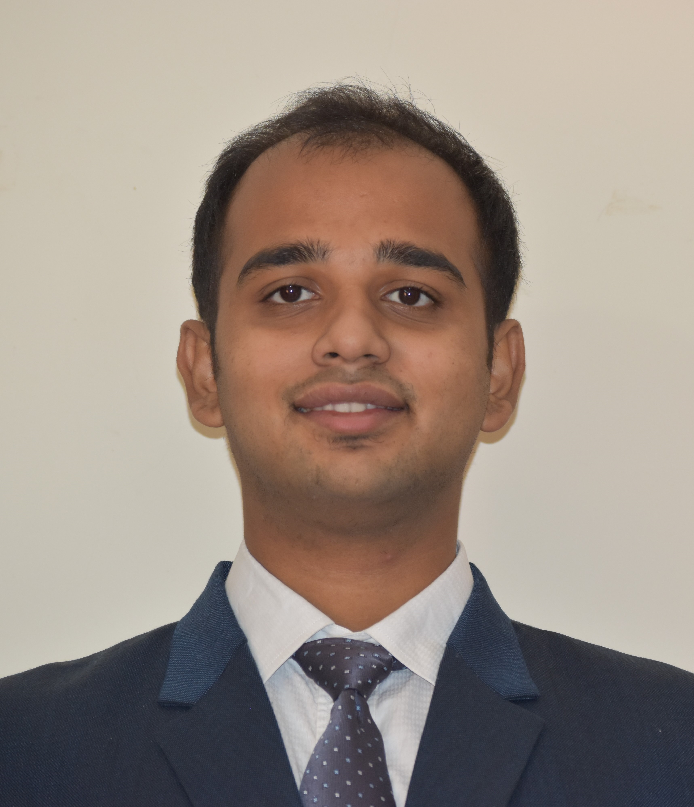

|
Rishi Dhar
|
 |
-
Feb 2024 Incoming Phd Student, ITLR, Universität Stuttgart, underProf. Dr.+ing. Bernhard Weigand, in the DROPIT Collaboration group
-
June 2023- November 2023 Master Thesis, , SIEMENS, Munich, advised by Msc. Theresa Pasch
-
Mar 2023- June 2023 Intern, , SIEMENS, Munich, advised by Msc. Theresa Pasch (Internship)
-
Jan 2022-Present: Student Researcher,Institute of Combustion Technology ITV, advised by Msc. Avijit Saha
-
Mar 2023-June2023: Student Researcher,Institute of Jet Propulsion and Turbomachinery IST, advised by Msc. Nima Fard Afsar
-
Oct 2021- Dec 2023: MS, Computer Aided Conception in Mechanical Engineering., RWTH
-
2017-2021: Assistant Manager, Bharat Petroleum Corporation Limited BPCL,Surat
-
2013-2017: B. Tech., ME, MANIT, Bhopal, advised by Prof. Rajesh Gupta (thesis)
-
Research: Multiphase Flows; turbulence modelling, neural networks, solver development CFD, FEM and DEM.
-
Contact and quick links: rishi.dhar@rwth-aachen.de,
Google Scholar,
Github.
|
Conferences:
Apr 2023: ‘‘A Reduced-Order Model for Multiphase Simulation of Transient Inert Multicomponent Sprays in the Context of Compression Ignition Engines’’under Avijit Saha, Dr. Ing- Abhishek Deshmukh
Detailed Bio
I am currently pursuing Masters at RWTH Aachen in Computer Aided Conception in Mechanical Engineering. With this course, I wish to cement my fundamentals of Fluid Dynamics. Among the curriculum, CFD is taught under the AIA of RWTH which has been the main motivator for choosing the course and University
I have been a working professional before, but rooted myself towards learning Continuum Mechanics and Fluid Dynamics. While pursuing Bachelors from NIT Bhopal, I have worked on Solid Body Designing at Mach Speeds and conducted experiments on Combustion Optimization in IC Engines. With my interest in Fluid Gas Interaction, I am studying Multiphase Flows, and Turbulence Modelling at RWTH Aachen
I have deep interests in Reinforcement Learning and using MATLAB has been a great experimenting base for me. I have used ANSYS, Hypermesh and CONVERGE for multiple projects. I have Industry experience for using CATIA and Solidworks, while working for Crompton Greaves and Hero Moto Corp. I code in Python for my interest in ML and recently started learning Java as a part of my curriculum.
I am still ambitious for Research with a Wide angle approach with my core interest areas being Computational Mechanics and Multiphase Flows.
|